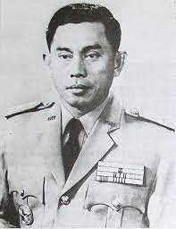
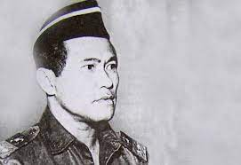
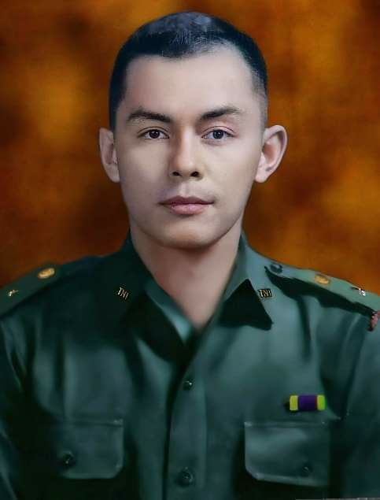
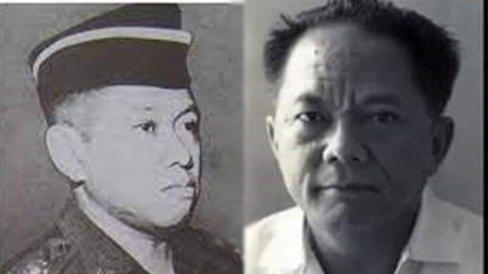
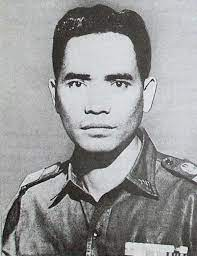
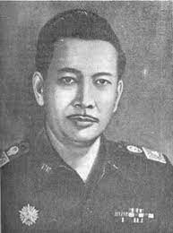
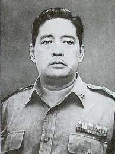

BAB II : Korban-korban G30S PKI
1) Jenderal Ahmad Yani 2) Letnan Jenderal MT Haryono 3) Kapten Pierre Tendean 4) Letnan Jenderal S Parman 5) Mayor Jenderal DI Panjaitan 6) Mayor Jenderal Sutoyo Siswomiharjo 7) Letnan Jenderal Suprapto

Jenderal TNI Ahmad Yani; adalah Menteri/Panglima Angkatan
Darat yang merupakan salah satu Pahlawan Revolusi yang gugur
sebagai korban tragedi Gerakan 30 September karena dibunuh
dalam Gerakan 30 September saat penculikan dari rumahnya.

Letnan Jenderal TNI Mas Tirtodarmo Haryono adalah salah satu
pahlawan revolusi Indonesia yang terbunuh pada peristiwa G30SPKI.
Ia dimakamkan di TMP Kalibata - Jakarta. Jenderal bintang tiga
kelahiran Surabaya, 20 Januari 1924, ini sebelumnya memperoleh
pendidikan di ELS kemudian diteruskan ke HBS.

Kapten Piere Tendean lahir 21 Februari 1939 di Jakarta. Ia menjabat
sebagai Komandan Peleton Batalyon Zeni Tempur 2 Komando Daerah
Militer II/Bukit Barisan di Medan. Kapten Pierre pun turut bertugas
menyusup ke daerah Malaysia ketika sedang berkonfrontasi dengan Malaysia.
Kapten Pierre Tendean adalah korban yang salah sasaran dalam peristiwa G30S PKI.
Pierre Tendean akhirnya ditangkap dan dibunuh secara brutal ketika
berusaha melindungi atasannya.

Letnan Jenderal TNI Siswondo Parman adalah salah satu pahlawan revolusi Indonesia
dan tokoh militer Indonesia. Ia meninggal dibunuh pada persitiwa G30S PKI dan
mendapatkan gelar Letnan Jenderal Anumerta. Ia dimakamkan di TMP Kalibata, Jakarta.

Mayor Jenderal TNI Donald Isaac Pandjaitan adalah salah satu pahlawan revolusi Indonesia.
Ia merupakan salah satu Jenderal yang menjadi korban dalam peristiwa G30S PKI. Akan tetapi,
dimakamkan di Taman Makam Pahlawan Nasional Kalibata setelah diculik dan ditembak hingga tewa

Sutoyo Siswomiharjo, lahir pada 28 Agustus 1922 di Kebumen, Jawa Tengah, mengikuti pendidikan
di Balai Pendidikan Pegawai Tinggi Jakarta selama masa pendudukan Jepang. Setelah menyelesaikan
pendidikan, ia memulai karir sebagai pegawai negeri di Kantor Kabupaten Purworejo. Setelah
Proklamasi Kemerdekaan, Sutoyo bergabung dengan Tentara Keamanan Rakyat (TKR) di bagian Kepolisian,
dan kemudian menjadi anggota Korps Polisi Militer. Ia diangkat sebagai ajudan Kolonel Gatot Subroto
dan kemudian menjabat sebagai Kepala Bagian Organisasi Resimen II Polisi Tentara di Purworejo.
Mayor Jenderal Sutoyo Siswomiharjo menjadi salah satu korban kekejaman kelompok PKI selama peristiwa
G30S PKI. Ia diculik dan ditembak hingga mengakibatkan kematiannya.

Jenderal Suprapto dilahirkan di Purwokerto pada tanggal 20 Juni 1920. Meskipun awalnya mengikuti
pendidikan di Akademi Militer Kerajaan Bandung, namun pendidikannya terhenti karena masuknya
Jepang ke Indonesia. Saat Indonesia memproklamasikan kemerdekaannya, Suprapto aktif berpartisipasi
dalam usaha merebut senjata pasukan Jepang di Cilacap. Setelah itu, ia bergabung dengan Tentara
Keamanan Rakyat (TKR) di Purwokerto dan turut serta dalam pertempuran di Ambarawa sebagai ajudan
Panglima Besar Sudirman.
Letnan Jenderal Suprapto menjadi korban ketujuh dalam peristiwa G30S PKI. Ia berhasil meredakan
pemberontakan PKI di berbagai wilayah sebelum akhirnya menjadi korban dan tewas dalam peristiwa
tersebut.